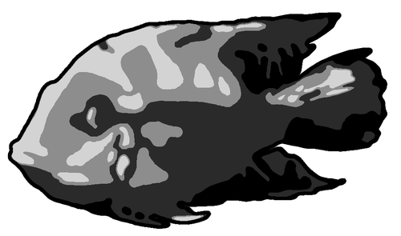
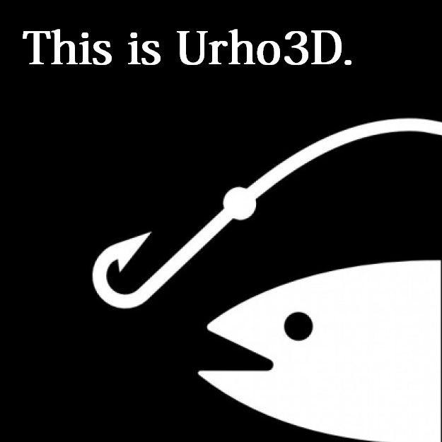

Hevedy
Hi.
I’m created a new design of Urho3d logo, more simple logo.
This is only a suggestion.
Preview:

Here the download: dl.dropboxusercontent.com/u/280 … Public.zip
License MIT like engine or what you like.
Thanks all.

Hi.
I’m created a new design of Urho3d logo, more simple logo.
This is only a suggestion.
Preview:
Here the download: dl.dropboxusercontent.com/u/280 … Public.zip
License MIT like engine or what you like.
Thanks all.
nice, I like it!!
Thanks you 
Wow; that looks great! It is very professional.

Need more internal details inside fish shape. Now I know, Lasse not’t like any fish photo changes.

I think the fish outline shape is in general very good. The original fish will anyway remain in some pictures, like my avatar and the decal texture 
Not completely sure about the font (if you don’t know it’s called Urho, the letter h is possibly unclear)
The logo would also be required in a horizontal 4:1 layout (for example 512x128 pixels) to replace Logo.png & LogoLarge.png in the Bin/Data/Textures directory.
[quote=“cadaver”]I think the fish outline shape is in general very good. The original fish will anyway remain in some pictures, like my avatar and the decal texture
Not completely sure about the font (if you don’t know it’s called Urho, the letter h is possibly unclear) [/quote]
1?. Option: If you like, use the original photo of the urho fish and add the new text.
The font is this font: google.com/fonts/specimen/Audiowide, with changes.
If you like i change the h letter, is a r and h. At the start of logo creation, i making with this a 3D vertical rh like 3 and D like d , but don’t look good for me xD.
In the zip file (under the photo) , have these files changed already, the large and the small, but if you like i add a new with the horizontal logo.
*If like make changes, the alpha image (and all) have the fish urho detached from name, you can move this where you like, with GIMP or other image editor.
Thanks.
It need discussion.
Need also alternative stuff for discussion.
Urho3D (i think) need have symbolic logo instead foto.
globus, nice avatar 
[size=85]globus, ??? ??? [/size]
I like it because it looks “modern” and therefore presents the engine as “modern”. But like Lasse said, the h is a bit unclear
http://www.1001freefonts.com/new-fonts.php?order=latest&perPage=50
Big heap of variants for write “Urho 3D” line in logo.
For select style exist necessity see his as alternative.
Logos changed and updated in the first page.
What color prefer, and what changes ?
I have worked in graphic design so I’m sorry if I sound a little too nitpicky. I’m known for being a bit of a perfectionist with my clients Here is my much more detailed response/friendly critique that I didn’t have time to make earlier.
I think the Urho3D text needs to be moved further to the right more towards his tail. The fish and the text seem too bunched together. - Re-edit nvm  I still think it would look good if they were more separated.
I still think it would look good if they were more separated.
I also agree with cin’s previous suggestion that the fish silhouette needs a little more detail in the middle (see my suggestion below about using a tri-color scheme).
You have a great color scheme going there but I think the colors ultimately should all be used together for one logo rather than having a separate logo version for each color. Three colors is an ideal amount for a good logo in my opinion; anymore than that and it’s too busy and any less and it’s too dull.
One other thing that seems off to me is having the D be a separate color while the 3 is not. This could just me being too obsessive of course but Urho and 3D feel like they should have some form of separation from one another if you’re going to color one part of the “3D” portion and not the other. So I guess what I’m getting at is that to a reader it seems to flow better if it is all one color like this “[color=#0080FF]Urho3D[/color]” or more separated like this “[color=#0080FF]Urho[/color] [color=#00BF40]3D[/color]” - Just a note here I’m well aware that making it be two separate solid colors will look rather uninspired and cliche; that’s solely for example purposes. My suggestions on rectifying that are below)
The most important part of designing a logo is having it be pleasing to the eyes while being memorable and unique at the same time. Making the Urho and 3D part be two separate colors is not enough to achieve this. I think on of the following 3 things would look the best.
A. Taking the partial color of the “h” in “Urho” away and in it’s place partially coloring the 3 in “3D” some way to to blend it into the “D” in Urho3D
B. Make the “3D” in Urho3D actually be 3 dimensional text by using gimp or photoshop. (Very easy to do.)
C. Just keep it simple and make all of Urho3D be the same font and color and instead focus the graphic detail and color scheme on the fish only while retaining the glow and underline.
I forgot to say I love the way you blended the glowing effect into the underline and font colors; that was a very good idea which I love. I also have a little suggestion/idea to try related to that for the underlining  How about rather than making the underline be so diagonal you instead connect the colored line to the outermost portion of the “U” in Urho and make it more of a solid color albeit with less contrast? By the way, the reason I mentioned that is that you don’t often see logo’s that use sharp diagonal designs. It does flow great but I think that a more standard design for the underline could be more appropriate in the case of Urho3D. I’d love to hear how others feel on that point.
How about rather than making the underline be so diagonal you instead connect the colored line to the outermost portion of the “U” in Urho and make it more of a solid color albeit with less contrast? By the way, the reason I mentioned that is that you don’t often see logo’s that use sharp diagonal designs. It does flow great but I think that a more standard design for the underline could be more appropriate in the case of Urho3D. I’d love to hear how others feel on that point.
What about “U” letter as horseshoe?

(Fish maybe inside horseshoe for example)
This post is just about how I see the steps that are needed to do this
Step 1 Gather information.
???Need take information from the private correspondence with Lasse
???1.1 This fish is one of many fish
???1.2 this particular type of fish from the fish family
???1.3 is a particular fish that was or live with Lasse
???1.4 Is there an aquarium for fish and what shape (square, round)
???1.5 aquarium can be assotiation with 3D world.
???and other information.
Step 2 Create a few conceptual drawings.
???In this step, there is no need to create a final version. See figure.
???And you need select several options with Lasse (1-4 options)

3 Step Together with Lasse decide on the color, font, size.
Step 4 Collect the final version or more
???For example:

[color=#004080]Urho3D is easy to learn, reliable and modular engine.
This fish is divided into modules (or components).
Just as easy to fold and children’s blocks.
Small association with 3D grid and poligons in the 3D world.
This fish lives in a world that seems unreal to us but that is much bigger and more beautiful than ours - in the underwater world.
Fish do not sleep. She is relaxed because it has no competitors and it confident.
Stability.
If it will float to the right side it will open eyes (the letter O) that would enjoy the beauty of the underwater world.
And so on.[/color]
Fish maybe without inside colors.
Sorry, for my bad English.
@ globus
That’s a well thought out and pragmatic post globus; I agree proper communication is essential with contribution based development. I have to say, out of all your concepts I like the 3d aquarium idea the best, and to expand on that idea a bit further, I think it would be clever to create a design in which the letters contained in the “Urho3D” logo resemble those fish tank ornaments people place in aquariums. The tricky part would be making a 3d aquarium render/design that isn’t too complicated looking. What do you think?
If Hgdavidy no longer has an interest in working on the design and I get some free time to play in gimp I’ll possibly attempt to see what I can come up with.
By the way, I actually thought of a great example that demonstrates the points I made in my previous post very well, top left hand side of webpage. It’s a simple logo with a lot of character.
Just to make things more clear, Urho was an extremely violent fish that lived during 2008-2009 at the fish tank of the company I work at, LudoCraft.
I can share the fish tank pictures in public too (it’s better to have as little private correspondence as possible so that everyone stays on the same page) but I don’t think that’s necessary for a new logo; an abstract image like Hgdavidy has drawn will work just as well. Opinions can change in one year
Maybe need foto images of this fish and aquarium for graphics experiments.
Here’s some. Most of them feature Urho in the center.
dl.dropboxusercontent.com/u/696 … MG0449.JPG
dl.dropboxusercontent.com/u/696 … MG0450.JPG
dl.dropboxusercontent.com/u/696 … MG0451.JPG
dl.dropboxusercontent.com/u/696 … MG0452.JPG
dl.dropboxusercontent.com/u/696 … MG0453.JPG
Ahaha he’s quite the stoic fellow isn’t he? 
I always wondered what the story behind the fish in the current logo was or if it was just random.
Thank you cadaver, great pictures.
The only thing we have to be careful of as that people don’t mistake Urho3D for some kind of 3d aquarium simulator, so using too much detail must be avoided.
Additional material for further transformations.
Reduced the amount of up to three colors.
It’s only 3 colors.

More colors.

Colors can be changed.
Need to clarify and change the right side contour.
You can add, delete, or merge the small details.
Files for the GIMP with the individual layers can be downloaded here
http://yadi.sk/d/x12pGODIHALsQ
=============
Thought:
In the future it will be possible to make fish 3d model.
It’s like a monkey in a Blender or ogre in Ogre3d.
Perhaps the skeleton animation.
Maybe it needed in person person who has access to fish that would make her photo shoot for the model and textures.

cin: I think that’s starting to look very good. It’s kind of monstrous and cute at the same time.
Some playing with photoshop…

The fish is beautiful, But if you select another better font, it will more cool.
If i well understand, this fish is Blue Acara (Aequidens pulcher)
I am right?
Urho certainly was some kind of cichlid, probably that one, have to ask at the office which exactly.

:3
Conception and material.
It’s only 3 colors.

As written by Lasse “It’s kind of monstrous and cute at the same time.”
I think that it can be used as a concept for further searches.
White - black
Light - Dark
Good - bad
Yin - Yang
Yes - No
10011101010011
Black color can be associated with anything.
Infinite depth of the universe.
Fear.
Empty scene where it all starts.
The starting point in which outbreak thought.
The scene in which everything is there except for the light source.
If our world is to turn off all the lights we can not see anything at all is already there.
Turn on the light and objects take shape, color, perspective.
You can add a fourth color.

You can change the contour of the bottom and right.
It may look like knife blades or abstractly as in the example of the cin
I think that white should retain details inherent in a concrete fish (Urho)
But the dark side can be styled. Add color layer, change contour, or transparent holes.
The white part contains a new element which is difficult to see in the photo.
“pectoral fin”.
Probably need to fix contour or add styling.
The same is true for the “dorsal fin”.


File for a program Gimp 2.8.6
Resolution 1056 x 640.
Three main layers and 12 helpers.
http://yadi.sk/d/pg6wNT8SHPcHB
Other ways.
Path 1:
If you do a photo shoot or shoot video of Hero you can get different angles for experiments.
For example (in dynamic):


This can be obtained also from other sources because fishes of one type are similar to each other.
In this case there will be no color characteristics of a particular fish (Urho).
Textures may also be needed if there is a need to make a 3D model of the Urho.
If you do not associate logo with a specific fish it is not essential.
Path 2:
The engine can be associated with submarine.
Friendly team as a team of this submarine.
Passengers as people who look from the portholes (monitors).
Aboard the submarine written “Urho 3D.”
The front part of the submarine can be painted in the colors of the fish (Urho) as on logos above.
Submarine may have fins like a fish.
Admin delete this post please …
OK, now got precise intel, Urho was a Thorichthys Ellioti
Cadaver, this now have 3D & 2D going to change the name from Urho3D to Urho Engine or Urho or some ?
I personally don’t see a reason for a name change. This started as a 3D engine and even the 2D components can be mixed with 3D objects, and are rendered as part of the same pipeline as the 3D scene.
Okay


aster2013 Cool!!!
It is not my works. An artist in our company draw it for us.
Tell him thank you! I really like!
This is very clear and simple looking, and memorable, I believe. Personally I prefer the “evil” looking fish variations, because I saw Urho’s evil firsthand but that’s just me.
Wow fish nice.
You need some logo like this ? https://www.google.co.uk/search?q=shark+logo&source=lnms&tbm=isch&sa=X&ei=mCUnU5SADcrI0wXs1YGQCA&ved=0CAcQ_AUoAQ&biw=1920&bih=979
No, I was referring to the images earlier in the thread (like the 3-color fish posted by cin)
Sample dynamic poses


default colours small

default colours 802x547 download http://yadi.sk/d/Qu-EX4lcLQVur
{kind=link}
{kind=link}
{kind=link}
{kind=link}
{kind=link}
{kind=link}
{kind=link}